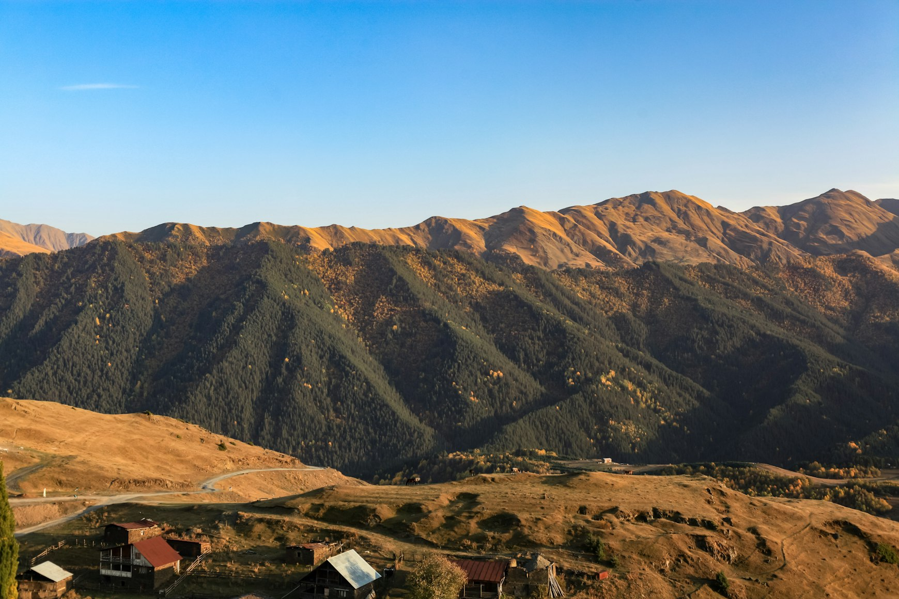
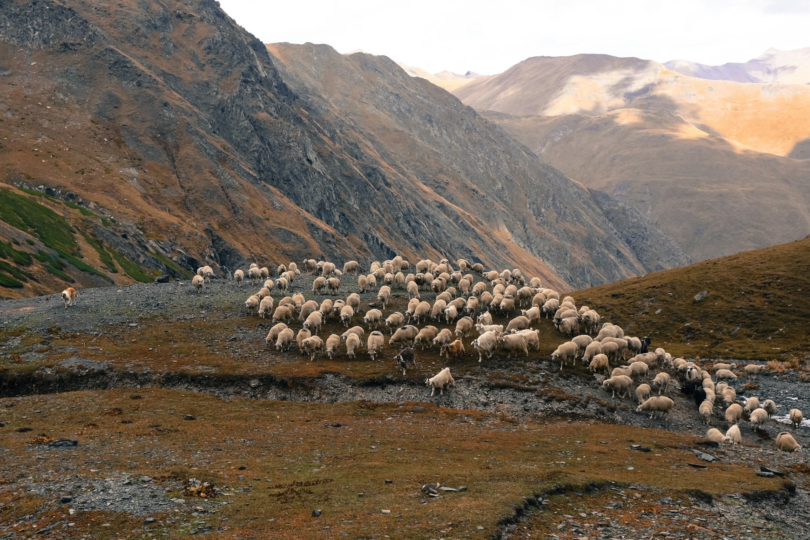

The further you drive from Tbilisi the more the landscape seems to outgrow the country itself. Roads begin disappearing into mountain weather. Villages become scattered and quiet. Petrol stations grow rarer. The Caucasus slowly takes control of the horizon until human infrastructure starts feeling temporary against it.
At some point Georgia stops feeling like a destination.
And starts feeling like open space.
The Road Into Tusheti
The road to Tusheti does not ease you into the landscape gently.
It climbs violently.
The Abano Pass twists upward through fog, loose gravel, waterfalls cutting across the road, and cliffs without guardrails. Old trucks move slowly around blind corners while clouds drift low enough to erase entire sections of the mountainside.
There are moments when the road becomes so narrow and empty that modern life begins feeling very far away.
Then suddenly the valley opens.

Stone towers appear in the distance. Horses move across green slopes without fences. Rivers cut through enormous silence.
Tusheti does not feel untouched.
It feels unreachable.
Even now entire villages remain isolated for months during winter once snow closes the mountain roads. Supplies arrive late. Weather still controls movement. Satellite dishes sit beside medieval towers as though two centuries accidentally collided in the same landscape.
And perhaps that is what freedom feels like there.
Not comfort.
Not escape.
But the absence of constant systems surrounding you.
Svaneti and the Vertical World
In Svaneti the landscape rises almost aggressively.
Villages seem pressed between glaciers and clouds. Ancient stone towers stand against mountains so steep they barely appear habitable. In places like Mestia or Ushguli weather changes faster than rhythm itself — sunlight one moment, fog swallowing entire valleys the next.

The scale distorts everything.
Dogs barking somewhere below the road. Tiny figures carrying wood across wet grass. A church barely visible above the tree line. Human life feels reduced to fragments inside a much larger environment.
European mountain regions often feel organized around tourism.
Svaneti still feels organized around survival.
Mudslides close roads. Snow isolates villages. Rivers flood without warning. The mountains remain physically dominant in a way much of Europe no longer allows.
And because of that the freedom there feels different.
More physical.
Less curated.
The Strange Silence of Vashlovani
Most people do not expect eastern Georgia to look almost desertlike.
Which is exactly why Vashlovani National Park feels so disorienting.
The landscape flattens into pale yellow plains and cracked earth stretching toward Azerbaijan. Dry wind moves through sparse trees. Eagles circle silently above canyons where almost no human sound exists for hours at a time.

Driving through Vashlovani feels less like the Caucasus and more like crossing some forgotten borderland between continents.
There are roads where you may not see another vehicle all day.
No cafés.
No hotels.
No music drifting from restaurants.
Only dust, heat, distant cliffs, and the sound of tires moving across dry ground.
In a world increasingly designed to remove uncertainty from travel, places like Vashlovani feel emotionally rare.
Not because they are extreme.
Because they still allow emptiness to exist.